01
Out of LAX, overnight
There is no nonstop to Geneva. The quickest one-stop in our search was SWISS through Zurich at about thirteen hours door to gate; Lufthansa through Munich or Frankfurt is close behind.
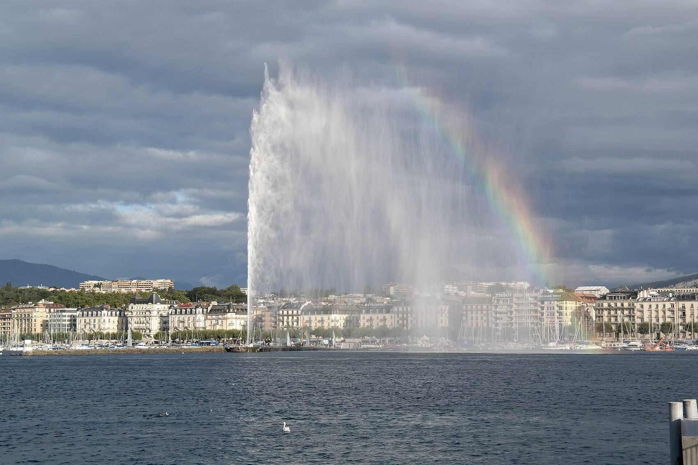
Summer on the lake · or snow in December · with a day at CERN
A week, two ways
One city, two very different trips. In July, Geneva is a lake town: swimming off the jetties, little boats across the harbour that cost nothing with the hotel's transport card, and light until half past nine. In December it is cheese and chocolate and Christmas lights, dark by five, with the Alps close enough for one day of learning to ski.
Both weeks include a day at CERN. Both are planned around a kid five and under, which mostly means parks, boats, one big thing a day, and lunch as the main meal.
Switching changes the week below and adds the ski day. For the soundtrack, press ♪ Play music in the bottom-right corner — browsers will not let it start on its own.
Summer · July
Highs around 27°C, about fifteen and a half hours of daylight, and the busiest month of the year — which mostly shows on the waterfront.
01
There is no nonstop to Geneva. The quickest one-stop in our search was SWISS through Zurich at about thirteen hours door to gate; Lufthansa through Munich or Frankfurt is close behind.
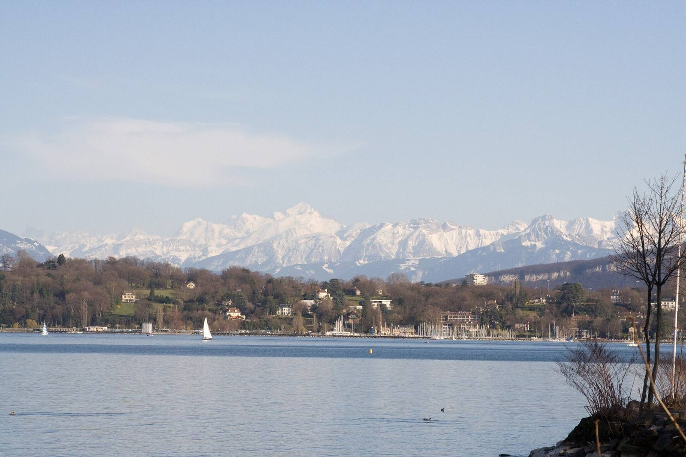
02
The airport train reaches Cornavin in seven minutes, and the free Geneva Transport Card — emailed by the hotel about three days before we arrive — covers it. Check in, walk to the water, watch the Jet d'Eau, find the flower clock. Early dinner, early night.
With a small one: the yellow Mouettes water taxis cross the harbour in minutes, free with the card. Most toddlers consider this the whole holiday.
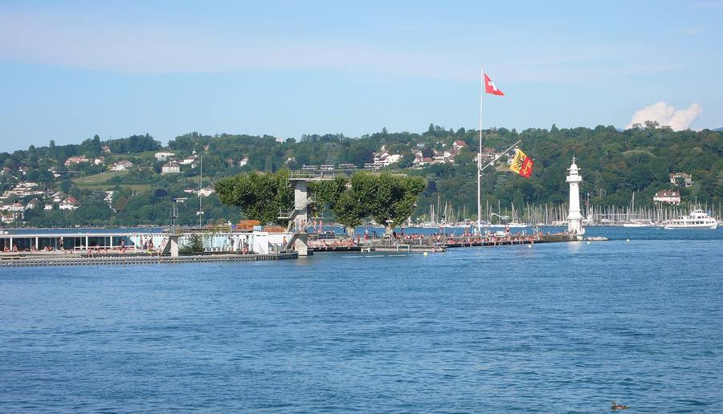
03
Morning at Parc La Grange: a playground with sand and a paddling pool, the rose garden, and Baby-Plage next door — a free little beach with showers and toilets. Back for a nap. Evening at the Bains des Pâquis, the old bathing jetty, for dinner at the buvette.
With a small one: the Pâquis is deep water off pebbles, not a paddling spot. Baby-Plage and the park pools are the toddler swims.
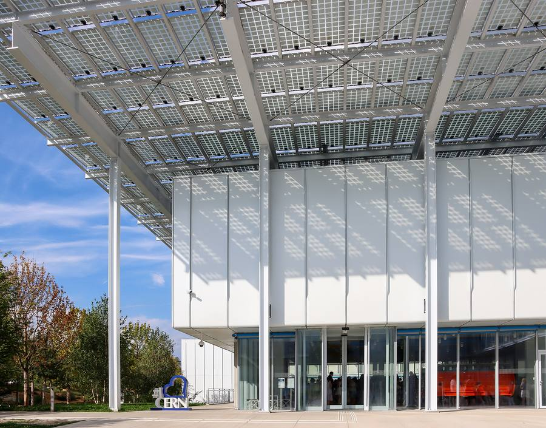
04
Tram 18 to Meyrin, CERN. Science Gateway opens at nine, is free, and is closed on Mondays — so this is any day but a Monday. Two hours in the exhibitions, lunch at the Big Bang Café or a picnic on the lawn, back by mid-afternoon. Full details in the CERN section below.
With a small one: nothing there is programmed for under-fours, but the halls are hands-on and pushchair-friendly. Treat it as a wander, not a tour.
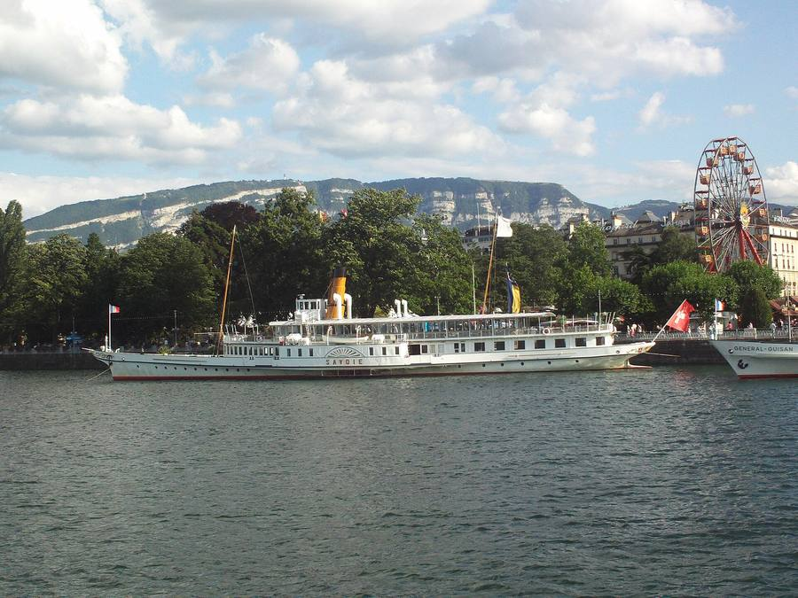
05
CGN still runs Belle Époque paddle steamers out of Geneva, and a family pass is planned for summer 2027. Under-sixes ride free. Or take the train an hour up the lake to Lavaux, the UNESCO vineyard terraces, and come back along the water.
With a small one: you can watch the paddle wheels and the engine room working. Budget time for staring.
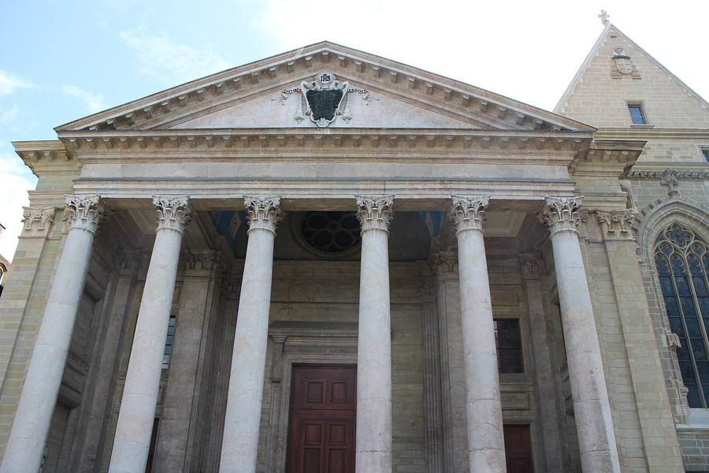
06
Up through the old town to St Pierre — the towers are 157 steps and CHF 7 for adults — then down to Parc des Bastions for the playground and the giant chess boards. Fondue lunch at Les Armures. In the afternoon, tram to Carouge, the Italianate town next door. On Thursday to Sunday evenings in July, the free open-air cinema by the lake.
With a small one: old-town cobbles and the Bastions stairs are hard work with a pushchair. Bring the carrier for this one.
07
Seven minutes to the airport. The station shops open even on Sundays, for the last chocolate.
Early winter · December
Highs around 6°C, under nine hours of daylight and about forty-nine hours of sun in the whole month. Cosy, quiet, and close to the snow.
When in December. The first half is the sweet spot: before the French school holidays (from 18 December 2027), before CERN's Christmas closures (last winter: no tours from 23 December to 5 January), and while the Christmas market is on. The catch is that early December is also when ski snow is least reliable. We picked mid-December and kept the ski day movable. Geneva school holidays
01
Same routes as summer. December 2027 flights were not on sale yet when we checked — see Getting there.
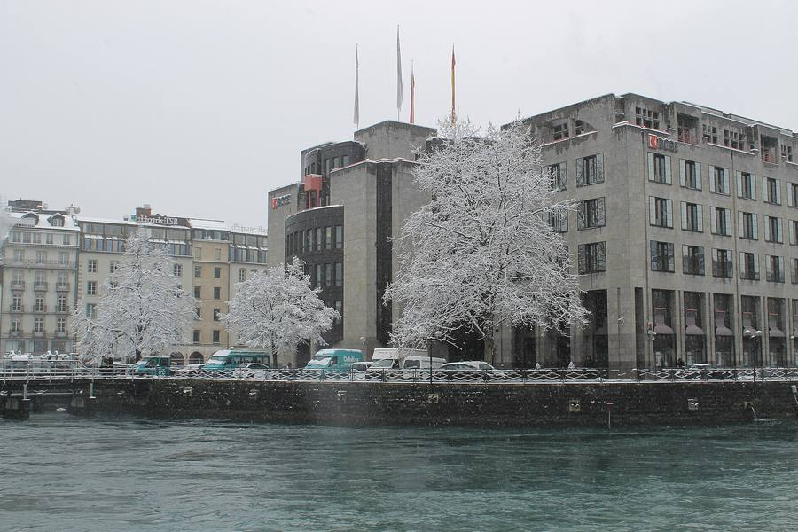
02
Seven minutes into town on the free transport card. Then Noël au Quai, the Christmas market on the lakefront: last year it ran from 19 November to 24 December, with a children's village, an ice rink and a Ferris wheel. The Jet d'Eau runs 10:00 to 16:00 in December, if the wind allows.
With a small one: the bise, the north-east wind down the lake, is the cold you actually feel. Hats that tie on.
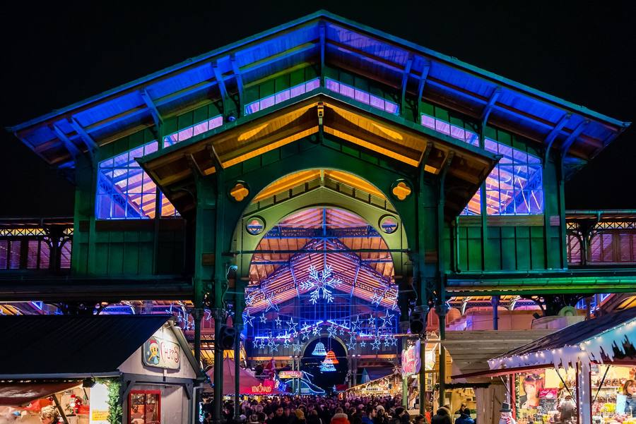
03
Just over an hour up the lake on a direct train, and the market starts two hundred metres from the station: more than 150 lit chalets along the quays, the Belle Époque covered market, and a Ferris wheel on Place du Marché. Last year it ran from 20 November to 24 December. Montreux Noël
After lunch, bus 201 to Château de Chillon: fourteen minutes to a real lakeside castle with dungeons and towers. Then back to the quays before five, because every evening Santa flies over the market — at 17:00, 18:00 and 19:00, and at 16:00 too at weekends. Château de Chillon
With a small one: the flying Santa is free, and the organisers say the best spot is on the quays near the Freddie Mercury statue. Go on a Monday, Tuesday or Thursday if you can — their advice for a quieter visit. Pushchairs are fine on the flat quays but stay in the cloakroom at Chillon, so bring the carrier. Skip Santa's mountain house at Rochers-de-Naye: the organisers say it is too high for under-threes.
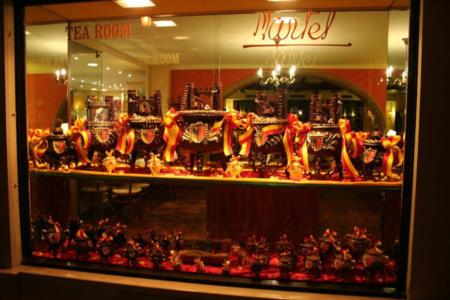
04
Up to St Pierre and Maison Tavel, the old town's oldest house, which is pay-what-you-wish, warm inside, and has a huge model of Geneva in 1850 to peer at. Fondue lunch at Les Armures, round the corner — there is a full suit of armour in the dining room. A chocolate stop on the way down: most shops close on Sundays.
Every December Geneva celebrates the night of 11 to 12 December 1602, when the Duke of Savoy's troops tried to climb the city walls and were thrown back. Costumed processions with torches through the old town, mulled wine, and chocolate cauldrons — marmites — in every chocolate shop window. Last year it ran 11 to 13 December. The 2027 dates are not out yet; the weekend of 10 to 12 December is our guess. Geneva Tourism
With a small one: a chocolate cauldron is an excellent bribe for the walk back down the hill.
05
Warm, free and indoors, which in December counts double. It is open on Sundays, when it runs the most shows and workshops, and closed on Mondays. Tram 18 from Cornavin.
With a small one: free lockers for the coats, lifts everywhere, baby-changing.
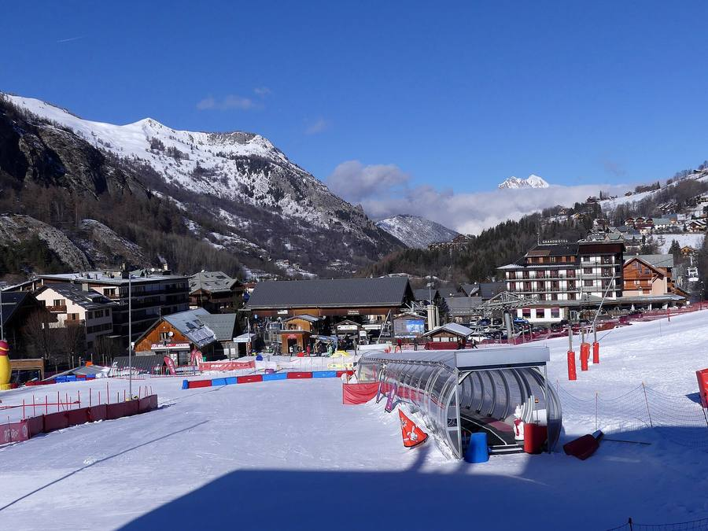
06
The 07:05 train to Aigle, the bus up to Villars-Gryon, a family lesson in the village by ten. Practise on the free conveyor slopes, or take the cog railway up to Bretaye if the village snow is thin. Sledge if skiing is not happening. Back in Geneva for dinner. Everything is in the ski section below.
With a small one: the ski school takes children from three. Short, with breaks, and a sledge as the backup plan.
07
Seven minutes to the airport, a box of marmites in the hand luggage.
Both seasons
The home of the Large Hadron Collider is twenty-five minutes from the old town by tram, it costs nothing, and its new science centre was built for curious people of every size.
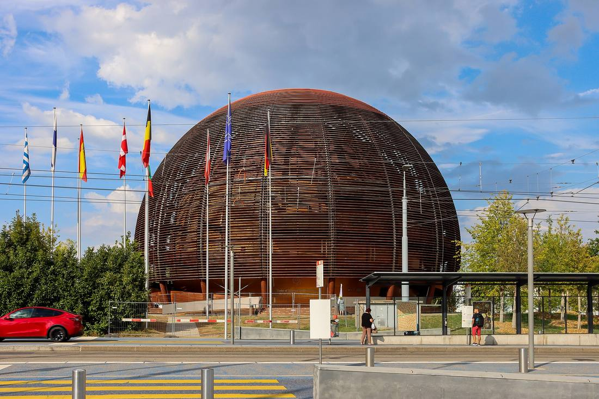
CERN Science Gateway opened in October 2023: a Renzo Piano building of glass tubes and a solar-panel canopy, paid for entirely by donations. Inside are three exhibitions — Discover CERN, Our Universe and Quantum World — plus labs, shows and a café.
Exhibitions, shows, labs and tours are all free. You still register, and booking online up to a month ahead guarantees entry.
visit.cern FAQTuesday to Sunday, 9:00–17:00, last entry 16:30. Last winter it closed on 24, 25 and 31 December and 1 January, with no tours from 23 December to 5 January; 2027 dates are not out yet.
visit.cern/hoursTram 18 from Cornavin to Meyrin, CERN, about 25 minutes. It is inside fare zone 10, so the free Geneva Transport Card covers it.
visit.cern: getting herePushchair-friendly throughout, with lifts, baby-changing and 321 free lockers. No large bags. The exhibitions are officially rated 8+ and tours 12–14+, so nothing is programmed for under-fours — but the halls welcome visitors of all ages, so plan a hands-on wander rather than a tour.
accessibility · familiesThe Big Bang Café does sandwiches and salads all day and burgers from 11:00 to 15:00, roughly CHF 15–30. Or picnic on the lawn beside it.
Big Bang CaféAllow one and a half to three hours. Guided tours and labs can only be booked on site that day — tours open two hours before they start — and only about one visitor in ten gets a place.
visit.cern FAQ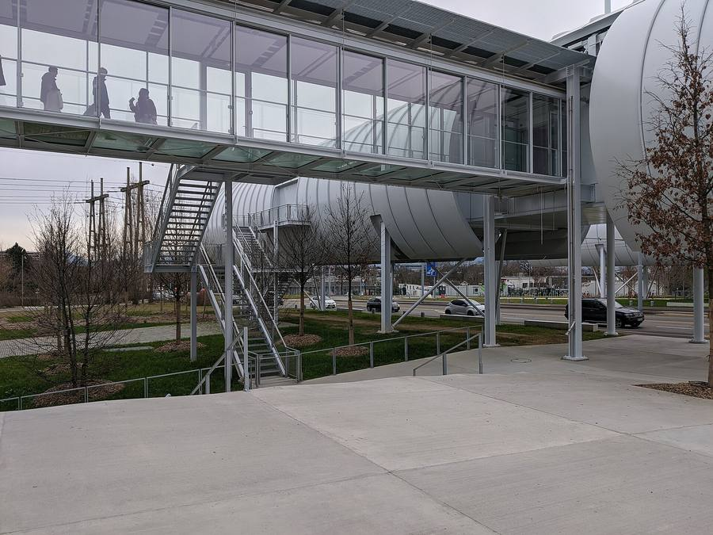
Early winter only
None of us ski, and that is the point of doing it this way: one good day on snow with a teacher, from a hotel we never have to leave. Not a ski holiday.
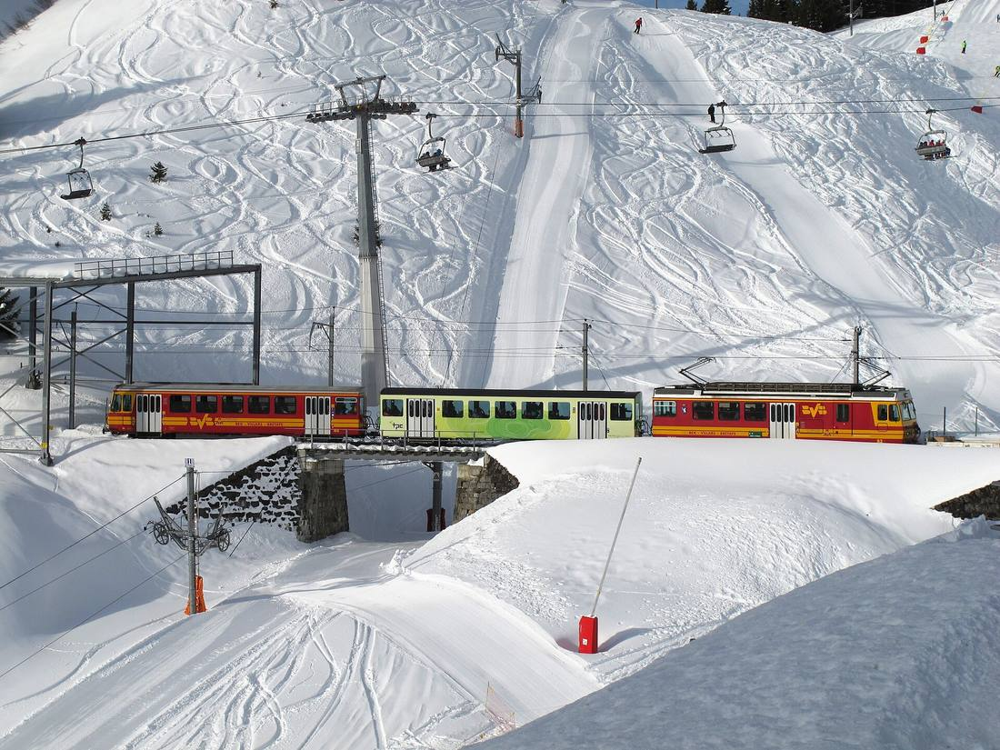
Where: Villars-Gryon, in the Vaud Alps at the far end of the lake. It was the only beginner-friendly resort of the three we compared that was due to open in early December, it needs no border crossing, and the train does it: Geneva 07:05, change at Aigle for bus 144, Villars at 08:58. Back at 16:34, in Geneva for 18:35. Under-sixes ride free.
A private lesson with the Swiss Ski School in Villars is CHF 80 an hour plus CHF 10 for each extra person, and they take children from age three. So the whole family, together, is about CHF 100 an hour. Ask for it in the village.
ESS VillarsThere are free conveyor-lift practice areas in the village and at Gryon, so between lessons nobody needs a lift pass. Last season children born in 2021 or later skied free.
skiresort.comThe ski school's snow garden takes ages three to six, at most six children per group for three- and four-year-olds, helmets compulsory, with childcare before and after. But it is only sold in packs of three half-days (CHF 185) with five days' notice. For a single day, the family private lesson is the realistic choice.
Jardin des NeigesSledge instead. The Col de Soud run is about 1.6 km through the woods back to the village, described as suitable for children with supervision. The cog railway day pass is CHF 36, or CHF 18 for a child. There is also a free sledging slope with its own conveyor.
Villars tourismVillars village sits at about 1,300 m, which is low for December; Bretaye, at about 1,800 m, is the safer snow. A 2022 study of sixteen Savoie resorts found snowmaking has not offset falling reliability at lower resorts. Keep the ski day movable.
The Cryosphere, 2022Skis, boots and helmets rent in the village. We could not find a one-day rental price for Villars, so budget for it separately rather than trust a guess.
| Resort | Getting there | Height | For small children | The catch |
|---|---|---|---|---|
| Villars-Gryon Switzerland | Train and bus, 1h53 | 1,300–1,800 m | Private lessons from age 3; family lesson about CHF 100 an hour | Low village; go up to Bretaye |
| Flaine France | Weekend ski bus from Geneva airport, 07:15–09:30 | 1,500–2,500 m | Kids' club sold only as six-day weeks | Passports, euros, weekends only |
| Les Houches France | Train only, about two hours | 1,000–1,900 m | Single Sunday toddler sessions, €23–40 | Opened 19 December last season; first Sunday train arrives 09:53 |
Every price and date here is from the 2026/27 season, checked on 8 October 2026. The 2027/28 season has not been published. Sources: Flaine, EBA ski bus, ESF Les Houches, Chamonix tourism.
Both seasons
Six options, from a lakefront splurge to an aparthotel with a kitchen. Every hotel guest gets the Geneva Transport Card free, so trams, trains and the little lake boats cost nothing. Rates are what Expedia quoted for the dates shown, in US dollars, per night for two adults and a child.
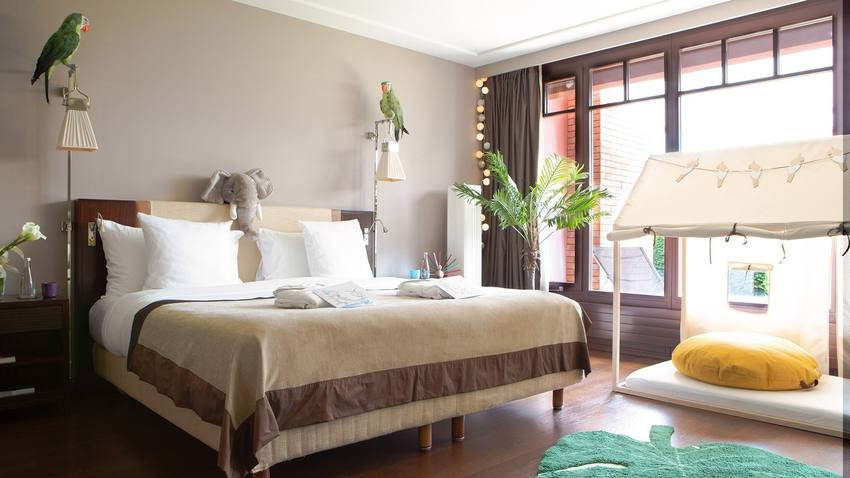
$1,810 a night · quoted for 12–15 July 2027
A free kids' club from six months to twelve years, every day 9:00–18:00. Connecting family rooms, children's rooms at half price, indoor and outdoor pools, a lakeside park and a boat into town. The catch: it is six kilometres out of the centre, in Bellevue.
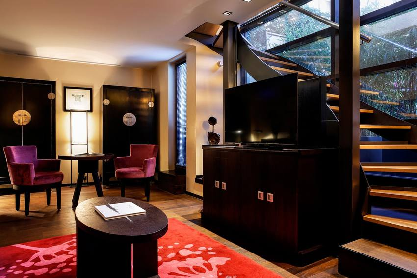
$397 a night · quoted for 12–15 July 2027
The duplex suite is 53 m² for four: bedroom upstairs, living room and sofa bed below, so naps and grown-up time happen on different floors. A minute from the lake, and it hands guests the transport pass itself.
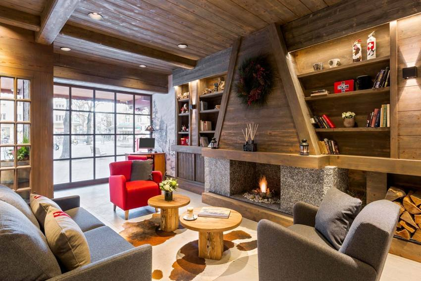
$369 a night · quoted for 13–16 December 2027
A chalet in the middle of the city, by the lake. The family connecting room is two 23 m² rooms, each with its own bathroom; cots on request for under-threes. The fondue restaurant downstairs is on our list too.
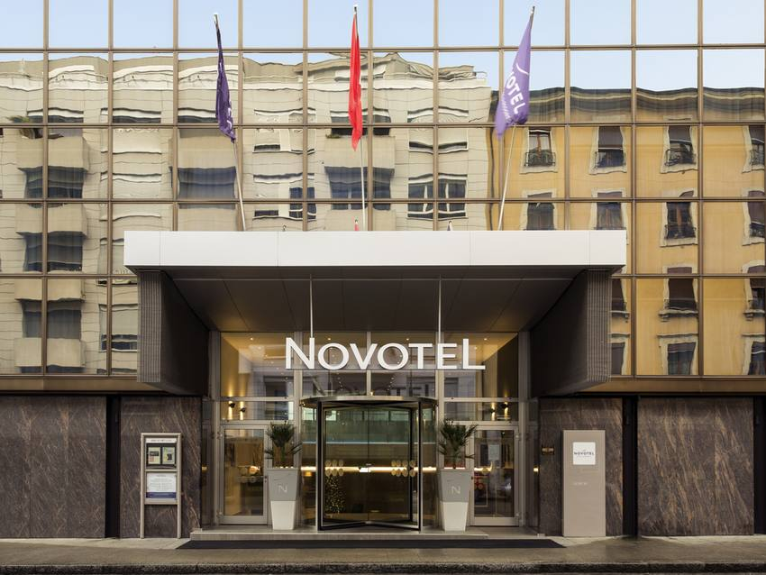
$519 a night · quoted for 12–15 July 2027
Predictable and practical: a family room with two double beds for up to four, three hundred metres from Cornavin station, trams at the door.
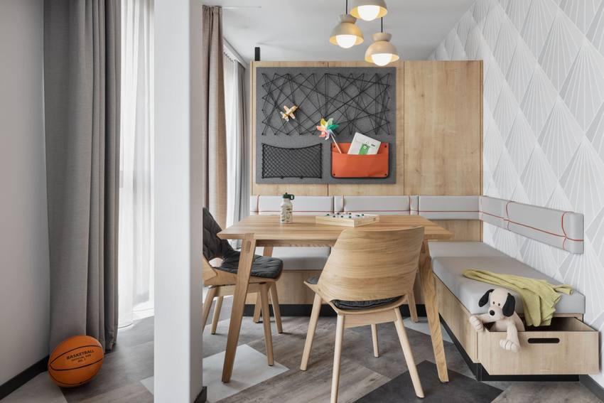
$407 a night · quoted for 12–15 July 2027
Aparthotel studios with a queen bed, a bunk bed and a kitchenette — which with a small child is worth more than a minibar. Tram 18 to CERN stops a minute away. Check-in is by app, with no staffed desk.
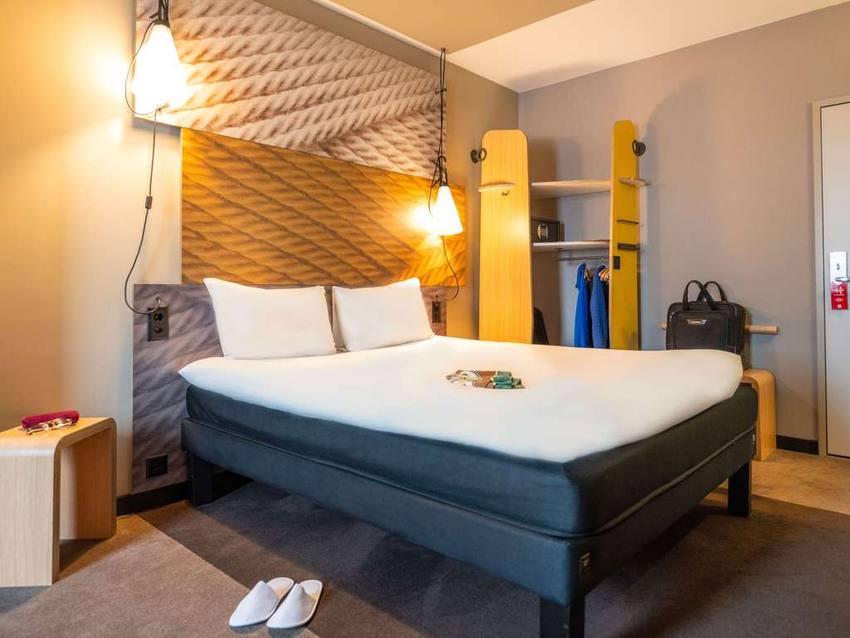
No published 2027 rate found yet
The value option that is still central: 30 m² rooms for four with a double and two singles, five minutes from the station and the lake. Transport pass included.
About Pâquis. Four of these six are in Pâquis, between the station and the lake — central, lively, full of cheap good food. A few streets back from the water it is also the red-light district, which reviewers of three of these hotels mention. In daytime with a pushchair it is simply busy; worth knowing, not worth avoiding.
Walk counts are straight-line, ten minutes at a relaxed pace, to the places on this page. The harbour sits between Pâquis and the old town, so some pins that look close are a bridge away — the free Mouettes water taxis cut that walk to a few minutes.
Both seasons
Nothing here is scheduled. It is the list for when it rains, a nap runs long, or someone needs to run around — with which ones are free, and which are good on a cold day.
Both seasons
Every name links to the place itself and every rating to its Tripadvisor page. Watch the Sunday tags — Geneva takes Sundays seriously.
Cheese, in a pot, with bread. Moitié-moitié — half Gruyère, half Vacherin — is the classic order.
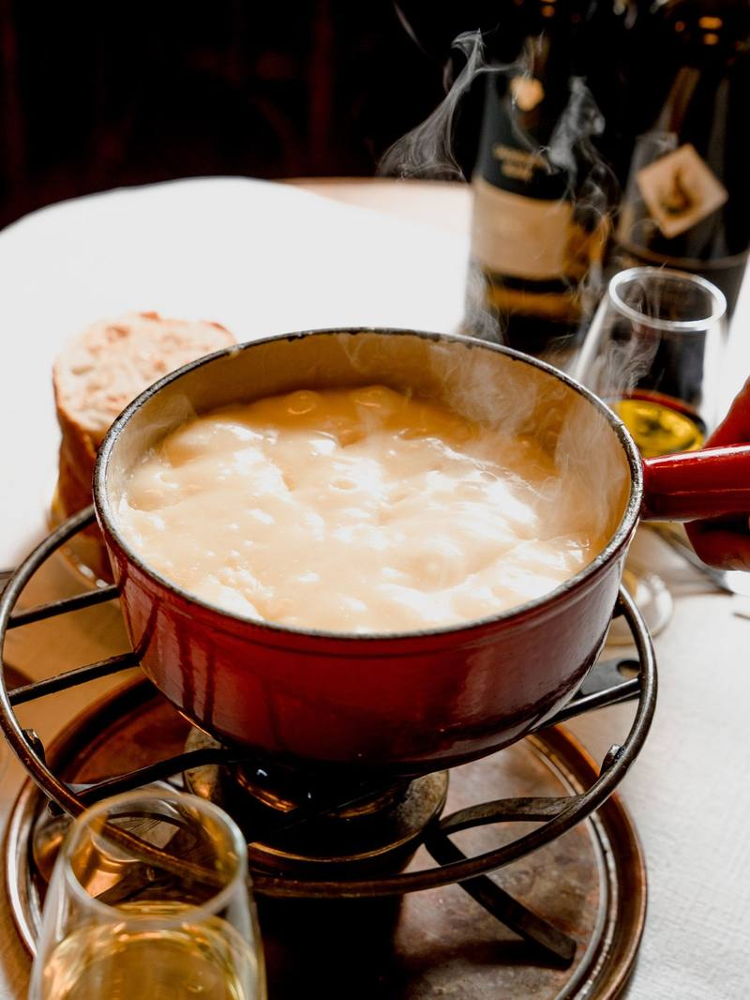
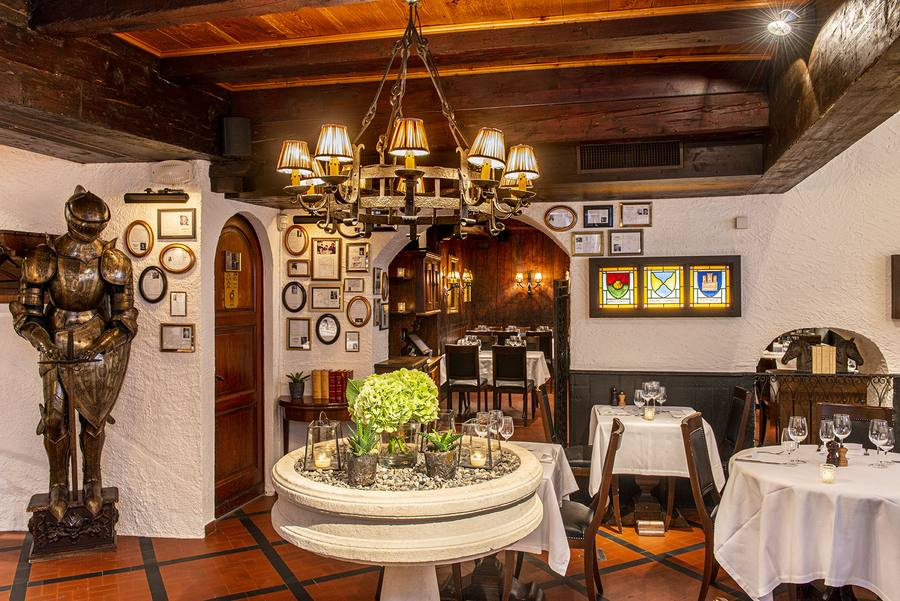
Order the house Gruyère AOP fondue with crusty bread; Geneva's classic neighbourhood fondue café, open every day, so book ahead. Place du Petit-Saconnex 6
Moitié-moitié fondue (Vacherin and Gruyère) with a Valais dried-meat plate, in a beamed Old Town dining room full of armour. Rue du Puits-Saint-Pierre 1
Order the moitié-moitié fondue that won the 2024 Cook'n'Cheese Gruyère AOP prize, served beside the cantonal parliament. Grand-Rue 39
Unabashedly touristy chalet evening: cheese fondue or raclette with live alphorn, accordion and yodelling; a toddler will love the music. Place de la Navigation 2
Lunch is the main meal here — set menus are cheaper and kitchens close in the afternoon.
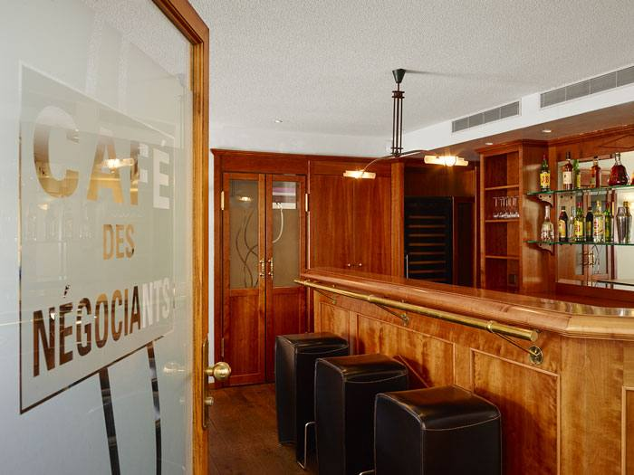
Cheap self-service plat du jour on a pier in the lake; in winter book the famous crémant fondue in the wood-heated cabin. Quai du Mont-Blanc 30
Wood-fired pizzas in a noisy family-run Eaux-Vives institution, open daily from 11:30, steps from the Jet d'Eau waterfront. Rue du Lac 3
Lyon-style bouchon in Carouge: escargots, Léman perch fillets, then let staff pull a Geneva bottle from the walk-in cellar. Rue de la Filature 29
Bircher muesli and coffee by day, tapas by night, in a tiny garden beside the Brunswick Monument facing the Jet d'Eau. Rue Adhémar-Fabri 7
Geneva is Switzerland's third-largest wine canton, about 1,400 hectares of vines.
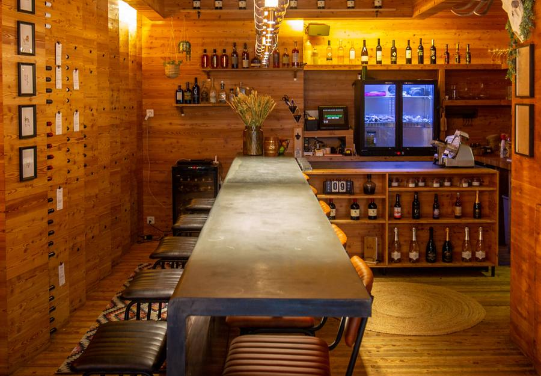
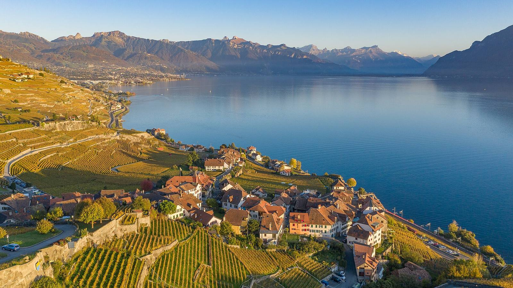
Swiss-only wine list with a Geneva focus; order local Chasselas or Gamaret with a Genevan cheese and charcuterie board. Rue des Étuves 1
Wine bar of the Caveau de Bacchus merchant: about 40 wines by the glass from 800-plus, with bistronomic plates to share. Cours de Rive 7
Lively Eaux-Vives wine bistro with local and rare bottles at fair prices; ask which of the rotating by-the-glass wines are Genevan. Rue Henri-Blanvalet 11
The canton's big growers' cooperative in Satigny, Switzerland's largest wine commune: taste and buy Geneva Chasselas, Gamay and Gamaret. Rue du Pré-Bouvier 30
Most of these close on Sundays. Favarger's walk-in workshop is the exception, and it is good with a toddler.
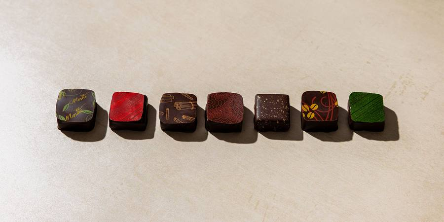
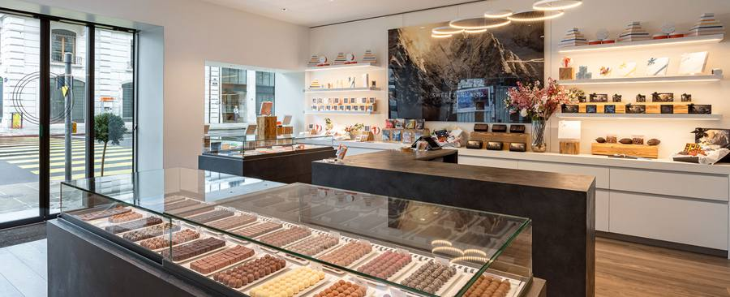
Geneva's oldest chocolatier, founded 1875: try the Pavés 1875 or Nobles du Rhône, then a hot chocolate in the tea room. Rue du Rhône 118
Since 1826: buy Avelines and Nougalines, then mould your own bars at the walk-in workshop, CHF 20, no booking needed. Rue du Marché 38
Family-run since 1939; the must-buy is the chocolate-coated Amandes Princesse almonds, which reviewers call unbeatable. Rue de Rive 4
Master chocolatier's original Carouge shop and workshop; try the 'Adrien' and 'Passion' ganaches, which have short shelf lives. Rue Saint-Joseph 12
Bright modern chocolatier on the walk from Cornavin to the lake, known for truffles, chocolate almonds and a richly praised hot chocolate. Rue du Mont-Blanc 5
Specialty roasters and two old cafés that have been pouring since 1921 and 1950.
Geneva's own specialty roaster since 2009; get a flat white or filter of house-roasted beans and a cinnamon roll. Rue du Stand 60
Pioneer of Geneva's specialty scene since 2014, rotating guest roasters; go for weekend brunch, but there are no reservations. Rue des Bains 40
Specialty bar a stone's throw from the Jet d'Eau, pulling Colonna espresso with rotating filter roasters; open weekend mornings. Rue des Eaux-Vives 15
Historic Old Town café since 1950: an espresso or winter vin chaud on the terrace overlooking Place du Bourg-de-Four. Place du Bourg-de-Four 20
Old-school 1921 café-glacier at Place du Cirque: coffee for you, homemade ice cream or banana split for the toddler. Place du Cirque 3
Both seasons
What parents who have done it say, checked against the official sources. Each card names where it came from.
Anyone staying in approved accommodation registered with Geneva Tourism gets a free digital Geneva Transport Card, emailed by the host ~3 days before arrival, valid for the whole stay on unireso zone 10 (canton of Geneva except Céligny): tpg buses/trams, CFF trains and Mouettes boats, including the Cornavin-airport train. It does NOT cover attractions or the Salève cable car (in France). geneve.com calls it personal/non-transferable; tpg says it is issued in the booking holder's name and several travelling together can share one card - ask your hotel.
geneve.com · tpg.chChildren under 6 travel free on SBB trains, accompanied or not, and on tpg trams/buses when with a ticket-holding adult; CGN lake boats are also free under 6. At 2y9m (July 2027) and 3y2m (Dec 2027) the child needs no ticket anywhere on Swiss public transport - the Junior Travelcard / Children's Co-Travel card (CHF 30/yr each, ages 6-15) and the free Swiss Family Card are irrelevant until age 6.
sbb.ch · tpg.chGeneva law (LHOM) makes shops close on Sundays and public holidays; normal closing is 19:00 Mon-Thu, 19:30 Friday, 18:00 Saturday, with one late evening per week to 21:00. Stock up on nappies, milk and snacks on Saturday. On Sundays use Cornavin and airport station shops (open 365 days), petrol-station shops (Migrolino/Pronto), bakeries (may open Sat/Sun to 19:00) and family-run shops.
silgeneve.ch · switzerlanding.comMigros and Coop supermarkets and pharmacies stock major nappy and formula brands, and Swiss tap water is safe for preparing formula. Most pharmacies close on Sundays; Pharma24 (Boulevard de la Cluse 38, near HUG hospital, +41 22 808 00 18) is open 24/7. Emergency medical number: 144.
tour-switzerland.ch · hug.chGeneva tap water is supplied and continuously tested by SIG and meets Swiss food-safety standards; the city's public fountains deliver the same drinkable water. Use the GE-Soif map to find the nearest fountain - bring a refillable bottle. (A Sept 2024 main burst briefly made water unsafe in one area; that was resolved 1 Oct 2024.)
geneve.com · ge-soif.chBest toddler playground: Parc La Grange (sand play, paddling pool by the playground, kiosk; open 06:00-22:00 Jun-Aug, 07:00-18:00 Nov-Mar). The City's 11 park paddling pools (incl. La Grange) open 09:00-20:00 May-September; they are unsupervised and meant for under-7s with an adult. Parc des Bastions has a playground, giant chess and a winter ice rink but stairs at the entrances. Other blog picks: Parc Bertrand (calm), the Botanical Garden (playground + animals), Bois de la Bâtie (free animal park).
geneve.ch · geneve.chBaby-Plage (Quai Gustave-Ador) is a free sand-and-grass city beach next to Parc La Grange, with showers, toilets and step-free access; reserved for children until 2007 and now open to all. Lifeguard supervision is NOT confirmed officially. Genève-Plage (Port-Noir, Cologny) is a fenced paid lido, May-Sept (approx. 14 May-27 Sept in 2026), adult CHF 7 / child CHF 3, with pools and a slide. Bains des Pâquis: May & Sept 10-18h, Jun-Aug 9-20h, CHF 2 adult / CHF 1 child, but it is a pebbly jetty with deeper water and stairs - better for a look and lunch than toddler paddling.
geneve.com · geneve.comSolar-powered Mouettes accept unfolded pushchairs (and up to two wheelchairs); the traditional Mouettes take folded pushchairs only. Mouettes are small (roughly 15-18 people) and have no fixed timetable. Trams and buses in Geneva are largely low-floor; avoid rush hours when they are crowded. On cable cars staff may ask you to fold the buggy.
geneve.com · tripadvisor.comGeneva is expensive. Lunchtime set menus (plat du jour) run about CHF 16-30 and evening à-la-carte mains CHF 20-50; a casual main is roughly CHF 25-35. Family restaurants usually offer a children's plate for about CHF 10-14. Lunch is the cheaper meal, and many restaurants close between lunch and dinner, so plan a lunch-focused day. Kid-friendly picks named by Geneva Tourism: Chez ma Cousine, Molino, La Storia, Inglewood, Un R de Famille (brunch with play space).
help.myswitzerland.com · cagi.chSwiss law: children under 12 who are under 150 cm must use a child seat in a car (CHF 60 fine). Taxis are not clearly required to supply one, so bring a travel seat or pre-book a seat-equipped transfer; the public transport card makes taxis largely unnecessary.
ch.ch · taxibambino.comEven in July bring a layer: the wind off the lake 'can drop the feel by ten degrees in minutes' (LorenziGo). The Botanical Garden has unshaded stretches - bring sunscreen and water. December: the Jet d'Eau runs only 10:00-16:00 (and in 2026 it was shut 2 Nov-3 Dec for maintenance), many outdoor sites shorten hours, and Bains des Pâquis switches to sauna/fondue mode.
lorenzigo.com · ww2.sig-ge.chToddlers are generally fine at Salève level (top station 1,100 m). Family-guide advice: stay below about 2,000 m for babies under 12 months; for higher peaks such as Jungfraujoch or Glacier 3000 forum advice is to check with a paediatrician first. Expect to fold the pushchair in cabins.
telepherique-du-saleve.com · tour-switzerland.chBoth seasons
No nonstop from Los Angeles, a seven-minute train from the airport, and from then on a city where the transport is free for anyone in a hotel.
A live flight search on 8 October 2026, economy, round trip 10 to 24 July 2027, two adults and a small child:
| Airline | Route | All three of us |
|---|---|---|
| TAP | via Lisbon — a fourteen-hour layover coming home | $2,770 |
| British Airways | via New York and London | $3,388 |
| Aer Lingus | two stops | $3,569 |
| Air France | two stops | $3,670 |
| Lufthansa | via Frankfurt, or Munich | $3,811 |
| KLM | two stops | $3,934 |
| SWISS | nonstop to Zurich, then on to Geneva — the fastest, about 13 hours | $5,433 |
The search returned the toddler as a third full-fare seat, so we cannot split out a child fare — treat these as the price for three seats. The cheapest premium economy was TAP at $4,945.
Airlines open fares roughly eleven to twelve months ahead — Lufthansa about 360 days, American and Delta about 330 — so an early-December 2027 trip starts appearing around December 2026 to January 2027. As a rough guide only, the same family's December 2026 fares were $2,865 to $3,130.
Flying nonstop into Zurich and taking the train down loses on both counts in our search: three more hours on a train after an eleven-hour flight, for more money than SWISS's own connection into Geneva.
The train from the airport to Cornavin takes seven minutes. A taxi is a fixed CHF 50 to the right bank and CHF 60 to the left.
Genève AéroportPlenty of older blogs still mention a free ticket from a machine in baggage reclaim. It ended on 1 January 2022; it is now CHF 3 for an hour.
airport FAQAnyone staying in registered accommodation gets the Geneva Transport Card: trams, buses, trains and the lake taxis in the whole canton, including CERN and the airport train. The hotel emails it about three days before arrival.
Geneva TourismOn Swiss trains, trams, buses and the lake boats, a child under six never needs a ticket.
SBBDeciding
The same city, two different weeks. Averages are MeteoSwiss's 1991–2020 records for Geneva.
| July | December | |
|---|---|---|
| High / low | 26.7° / 14.8°C | 5.7° / 0.0°C |
| Rain | 77 mm over 8 days | 88 mm over 10 days |
| Sunshine in the month | 271 hours | 49 hours |
| Daylight | 15.8 h, sunset 21:32 | 8.7 h, sunset 16:53 |
| Crowds | The busiest hotel months are August, July and June | Well outside the peak |
| The lake | Swimming, beaches, boats every few minutes | Boats on a reduced winter schedule |
| CERN | Open, closed Mondays | Open, closed Mondays and around Christmas |
| Snow | None | A ski day in the Alps, snow permitting |
| What's on | Free open-air cinema; Swiss National Day on 1 August | Christmas markets in Geneva and Montreux; Escalade weekend |
| Flights | On sale, from $2,770 for three | Not on sale until around December 2026 |
Sources: MeteoSwiss and its open daily data for Geneva; Geneva statistics office; Geneva Tourism.
Flights for three plus five hotel nights. Hotel rates are what was quoted for 12–15 July 2027, multiplied out to five nights — a planning number, not a booking.
| If we book… | Flights | Hotel, 5 nights | Total |
|---|---|---|---|
| The cheapest TAP via Lisbon; Eastwest. Watch the return: a fourteen-hour layover in Lisbon. | $2,770 | $1,985 | $4,755 |
| The sensible one Lufthansa via Frankfurt; Eastwest. One short connection each way. | $3,811 | $1,985 | $5,796 |
| With a kitchen Lufthansa via Frankfurt; Stay KooooK. The aparthotel, with a kitchenette and the CERN tram outside. | $3,811 | $2,035 | $5,846 |
| The splurge SWISS via Zurich; La Réserve. The kids' club from six months, and the lake. | $5,433 | $9,050 | $14,483 |
Winter adds the ski day. A two-hour family lesson in Villars was CHF 200 last season, and the cog railway up to Bretaye CHF 36 per adult. Rental and train fares are on top, and we could not confirm either, so they are not in this number. Food in Geneva is expensive: lunch set menus run about CHF 16–30, dinner mains CHF 20–50.
Paperwork
Every source the research used, checked on 8 October 2026. Tripadvisor ratings were read from each listing on the same day.
From Wikimedia Commons, under the licences shown: Lake Geneva And Mont Blanc (140455795).jpeg — J Doll, CC BY 3.0; Facade of Saint-Pierre cathedral, Geneva 20180829-1.jpg — Suicasmo, CC BY-SA 4.0; CERN Geneva 2.jpg — Unnerving duck, CC BY-SA 4.0; At Geneva 2024 207.jpg — Mike Peel (www.mikepeel.net), CC BY-SA 4.0; At Geneva 2024 209.jpg — Mike Peel (www.mikepeel.net), CC BY-SA 4.0; Jet d'eau Geneva.jpg — Choinowski, CC BY-SA 4.0; Lavaux Switzerland.jpg — Lorenz Poffet, CC BY-SA 4.0; Marmite-Escalade-window.jpg — No machine-readable author provided. Schutz assumed (based on copyright claims)., CC BY-SA 3.0; Christmas Market (191945879).jpeg — Luca Florio, CC BY-SA 3.0; GenevePiscine.JPG — Pingelig, CC BY-SA 3.0; Tapis à skis à Valloire en hiver (janvier 2025).JPG — Florian Pépellin, CC BY-SA 4.0; Geneve sous la neige - panoramio (19).jpg — Patrick Nouhailler's…, CC BY-SA 3.0; Savoie moored in Geneva.jpg — Ypsilon from Finland, CC0; Col de Bretaye02 2016-02-06.jpg — KlausFoehl, CC BY-SA 4.0.
From each venue's or hotel's own website: Café des Négociants, Café du Soleil, Eastwest Hotel by Malone, Hotel Edelweiss (Manotel), La Réserve Genève, Novotel Genève Centre, Philippe Pascoët, Restaurant Les Armures, Stay KooooK Geneva City, Sweetzerland, UVA Genève, ibis Genève Centre Lac.
Music: Einzug der Greifler in Bulle, Swiss folk music played by the Mosibuebä (2006, from the CD 30 Jahre Mosibuebä). Recording by Paul Lüönd, CC BY-SA 2.5, via Wikimedia Commons.